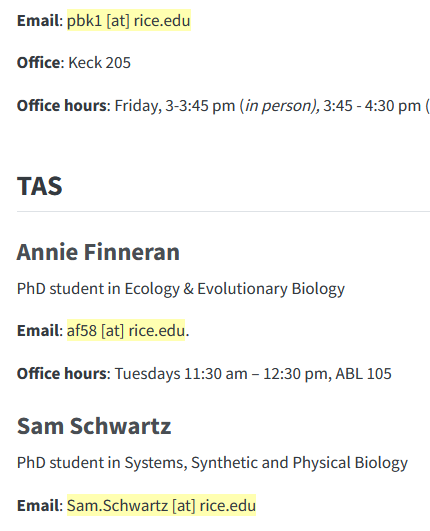
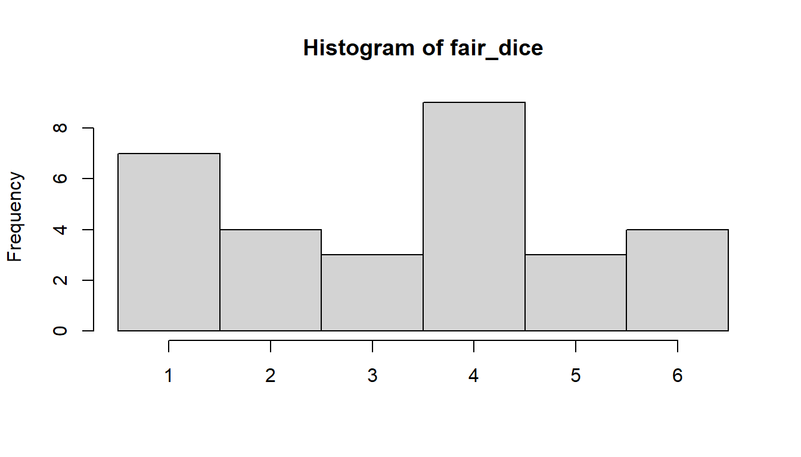
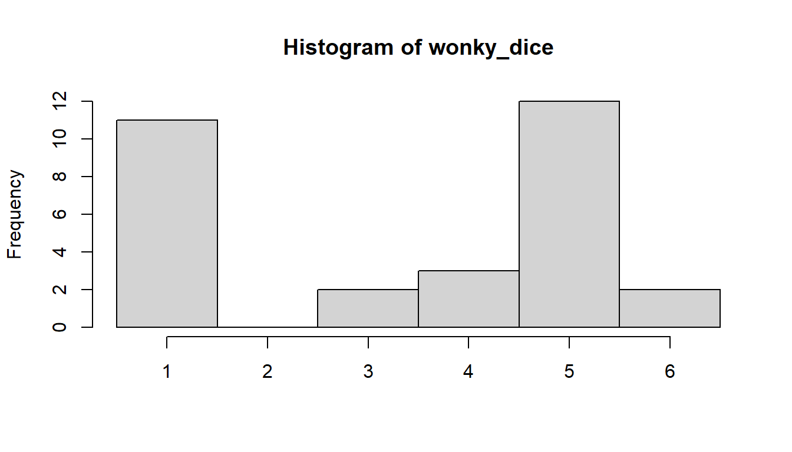
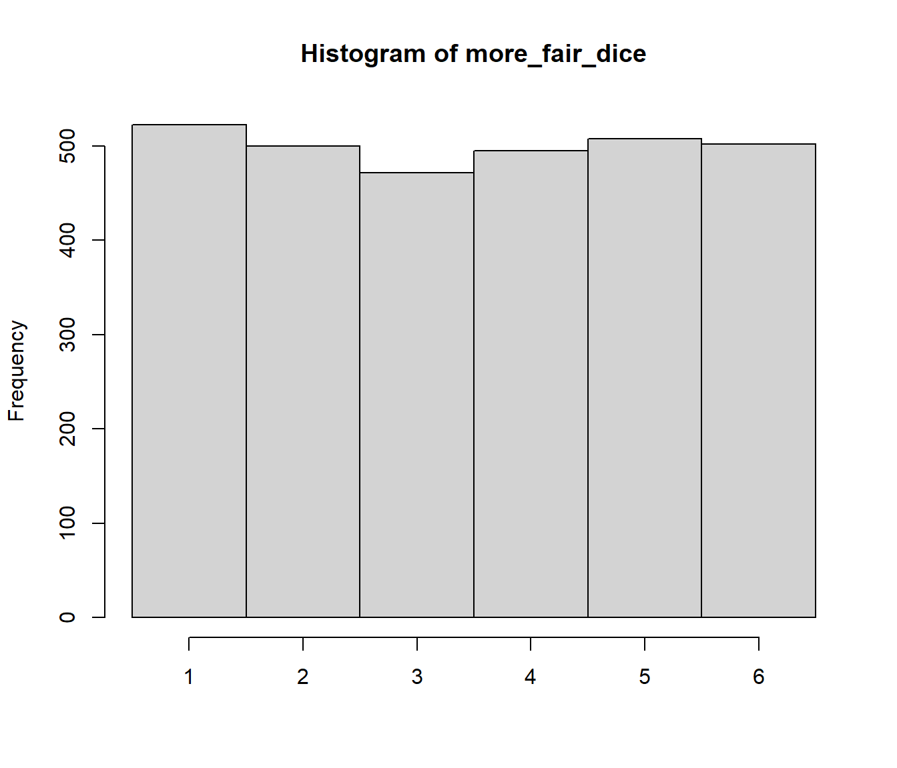
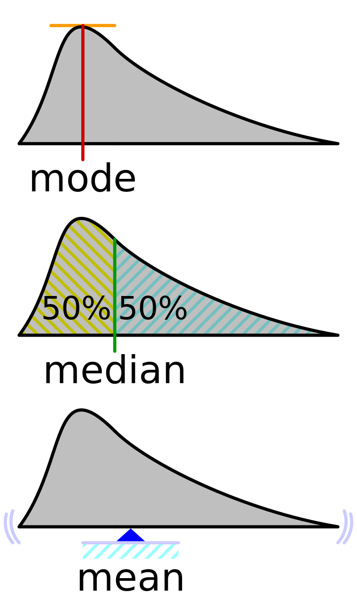
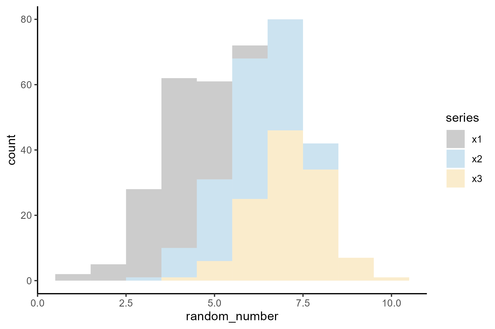
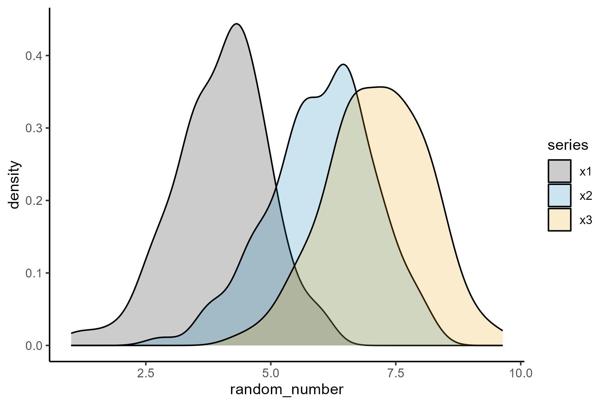

flowchart LR A[Data population ] --> B(Sampling ) --> C(Distribution ) --> D[Analyses ]
class 2: Statistics Review
with hands-on data analysis workshop
Quick recap: last class
- Covered some logistics. Course website is here - https://bios-538.github.io/
Note:
From the feedback we have so far and hearing from students, I see quite a few people feel overwhelmed. I hope the next 3 slides that clarify lecture format and assignments will help encourage people to stay on.
How challenging will it be if I am very new to R?
I believe that if you have one undergraduate level course where you learnt to code in any programming language, it should not be too challenging to pickup R syntax with 3 weeks of practice.
. . .
That said, the examples we walk through in class and working on the assignments (with help from very enthusiastic TAs) will be great resources to guide the learning process.
This classroom is a safe space, so no question is too simple or too “silly” to ask.
There are too many assignments, seems like a lot of work?
The lectures are structured to be interspersed with 5-10 min coding sessions where we will walk everyone through stuff. You essentially save all the work we did in class, and add to that by working on your own time for the assignments.
So 25% of the assignment will already be done in class!
. . .
Practicing by working through code at your own time is the only way to actually learn coding.
Assignment logistics
Thursday: Assignment uploaded and introduced in class
Get help in office hours during the week
Friday 7 pm: submission
Next Thursday: Brief discussion on the previous week’s assignment, common mistakes
Next Saturday: receive your grades and feedback from TAs
Would I be bored in the first 2 lectures if I already know stuff?
Please do finish the coding task at hand even if it seems too easy. There surely will be a thing or two you haven’t noticed before to learn!
. . .
Try to help your peers and neighbors during the class. if you want to do this at scale, ie) for multiple lectures / be open for other students reaching out, contact me and you will get extra credit with a micro TA designation 😉
. . .
BONUS CONTENT : We will also have some bonus content that is a good challenge for you to work on during the class (once you finish the regular task, of course)
Fun fact: Don’t put full email IDs on the internet
Do you know why?

Today’s class
Analyze data like in the B.C.E times (before computers era!)
. . .
Not this way. this is number theory
. . .
This way for statistics
Some background terms
What is a random number?

Are these truly random?
hint: most classical physics processes can be predicted using Newton’s laws!
Side point: Are these truly random?
Can it be more or less random?
Yes! Depends on how often the random number takes each possible option. Visualizing this is called a distribution.
Fair dice: Each outcome is equally likely. let us simulate it 4
# set.seed(212) # for reproducible random numbers
fair_dice <- sample(1:6, 30, replace = T)
cat(fair_dice) 1 5 6 2 1 1 1 4 6 4 1 3 1 4 2 2 3 4 6 4 3 6 5 4 4 5 2 4 1 4hist(fair_dice, breaks = 0.5:6.5, xlab = NULL)
Wonky dice: Certain outcomes are more favored
wonky_dice <- sample(c(1:6, rep(c(1, 5), 6)), 30, replace = T)
cat(wonky_dice)1 5 5 1 6 5 4 3 5 5 4 5 1 1 4 5 1 1 5 1 5 1 1 3 6 5 1 5 1 5hist(wonky_dice, breaks = 0.5:6.5, xlab = NULL)
These plots are called histograms. Each bar shows a bin of multiple data-points with similar values. Bin location, bin-width (or number of bins) determine the shape of the distribution.
Uniform distribution
It does look uniform when a large number of points are sampled. Here I did 3,000 points
# set.seed(212) # for reproducible random numbers
more_fair_dice <- sample(1:6, 3000, replace = T)
hist(more_fair_dice, breaks = 0.5:6.5, xlab = NULL)
uniform distribution has the most randomness (maximum uncertainty) since every outcome is equally likely. But in general, think of any arbitrary shape for a distribution for better understanding of the term distribution.
Statistics activity
Merges into the assignment: Take a photo of your distribution chart at the end of each task. And these photos with one or two sentences that indicate your understanding are the assignment for this week!
Data: We generated “populations” of data from 3 different distributions. For the final task, you can compare your data with another groups data from a different population for best results.
Logistics
We need 9 volunteers to sample the data for the 9 groups
Each group will get 30 data points ; while everyone is forming teams (5+ members/team)
I will briefly demo how to arrange them into a histogram
How to form a good team?
Get to know new people in the class!
- ex: me, 2 of my friends, 2 new people
If you know a tiny bit of R, make new friends who are new to R
Let us start forming teams now!
task 1. Histogram: distribute the data into bins
show demo: ~ 5-10 data points
Choose bin widths for your histogram. I recommend 0.25, 0.5, 1.
Once you have a histogram, mark the outlines (top shape) of the distribution
- Take the marker pen from first bench and mark the topmost data and the chart paper above it as well
task 2. Find central values
A single value that can describe the whole distribution (to an approximation)
Mark each of these quantities visually on the chart below the distribution (approximate location works)
Mode: the most repeated value / bin in this case
Median: center most value when data is ordered
Mean: average (sum/ number of data points)

task 3. Standard Deviation: spread of data around the mean
Ask the TA or your group’s R experts to give you the
sd()output and note it down.Visually demarcate the
Mean +/- SDandMean +/- 2 x SDlocations on the chart.Count the number of points within the
1 SDand2 SDintervals
task 4.1 Hypothesis testing: are two different samples identical?
Merging the distributions: Is a visual way to tell if two distributions are similar or not.
Befriend a neighboring group with a different colour of datapoints and merge your histograms into a single chart.
Together both teams will assemble two histograms in the same chart (start from any groups) ; and mark the tops of the guest group for easy visualization
task 4.2 Hypothesis testing: are two different samples identical?
Quantitative value: But we need to depend on more concrete statistics than gut feeling, hence we do hypothesis testing using t.tests.
Null hypothesis: You start with the hypothesis that both samples are from the same distribution i.e.) they are essentially identical. And you try to find quantitative evidence to reject this (~ disproving the null hypothesis)
Using
R’st.test()function: Get the TAs or your group’s R experts to calculate this for you and note down the values.- Also do another test comparing to another group from the same population.
Rule of thumb: if the
p.value < 0.05; then the data-sets have very little likelihood of being sampled from the same distribution.
How does the population you sampled from look like?
It was ~normally distributed, and standard deviations were all the same hence assumptions for doing t.test were met!


Summary
Today’s class
We distribute data into bins to form a histogram.
The complexity in each individual data can be simplified by describing it with just a central tendancy +/- spread (as a measure of variability).
- Mean +/- Standard Deviation
We compare two (or more..) distributions of data using hypothesis tests, by starting with a null hypothesis and finding evidence against it.